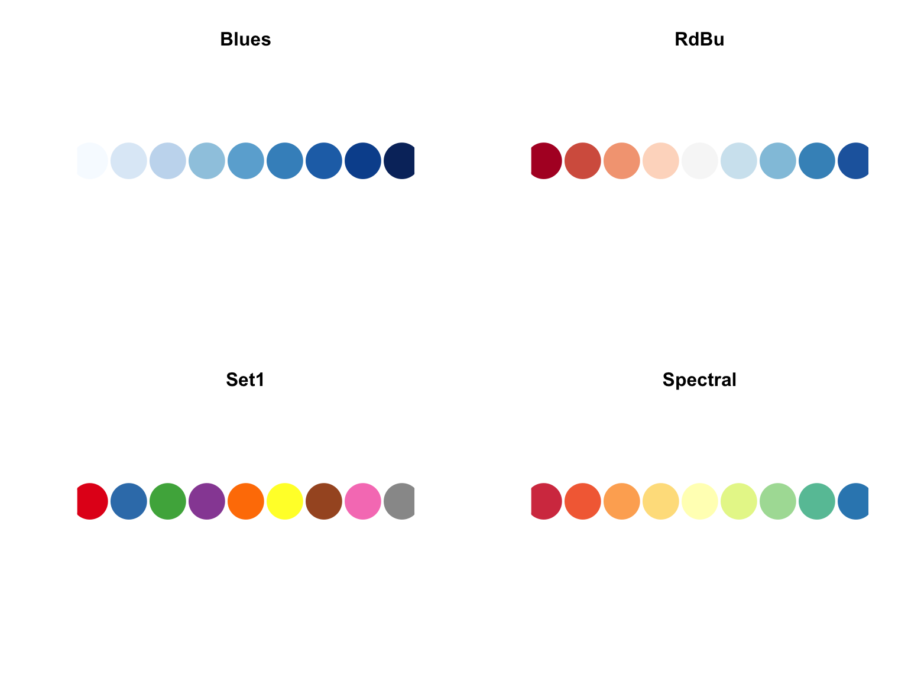
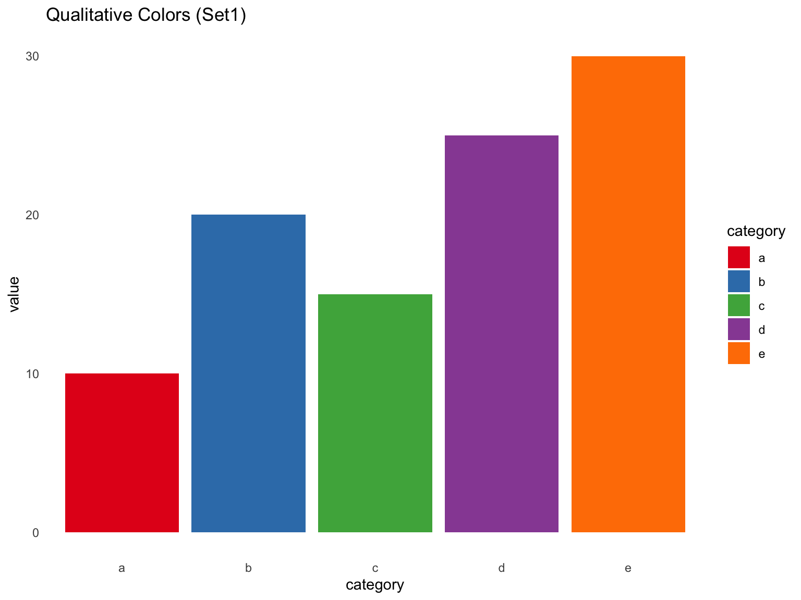
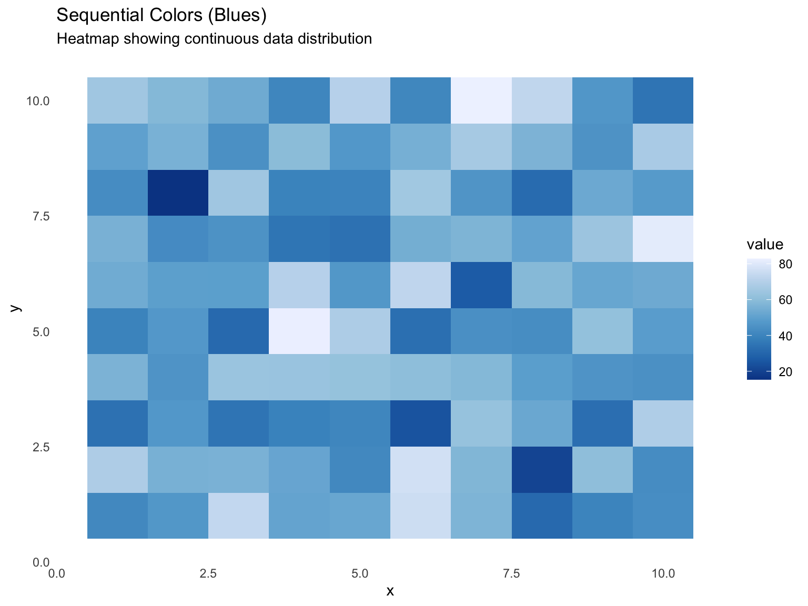
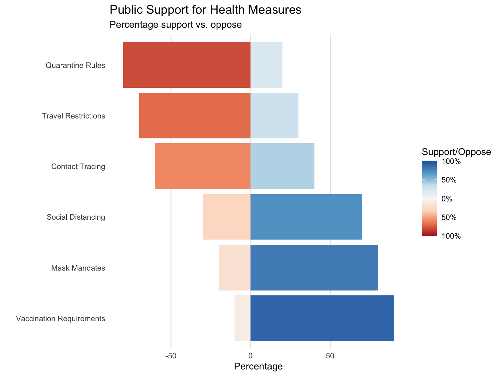
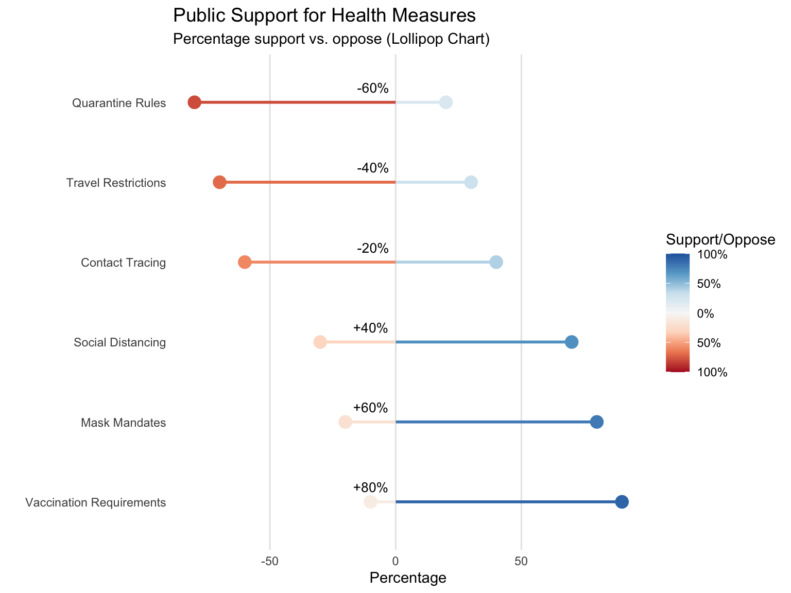
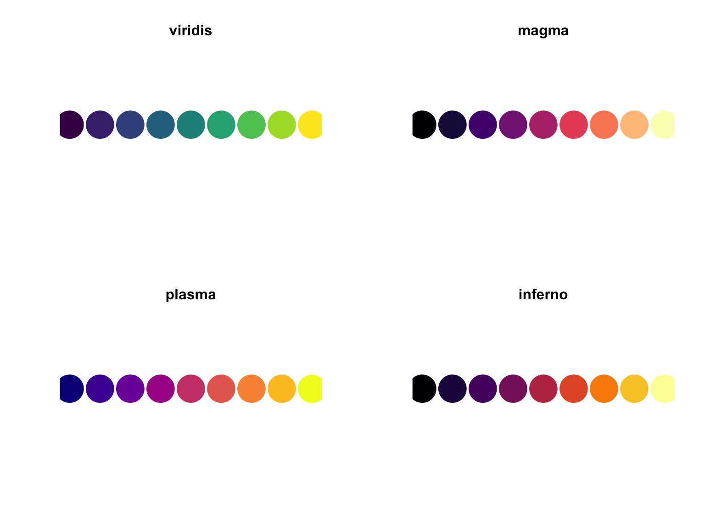
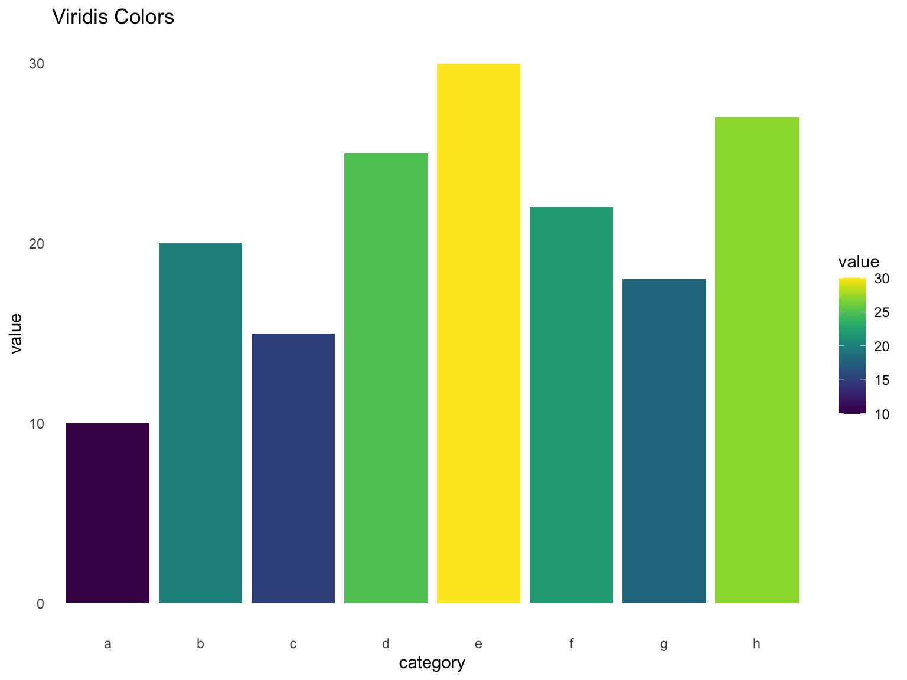
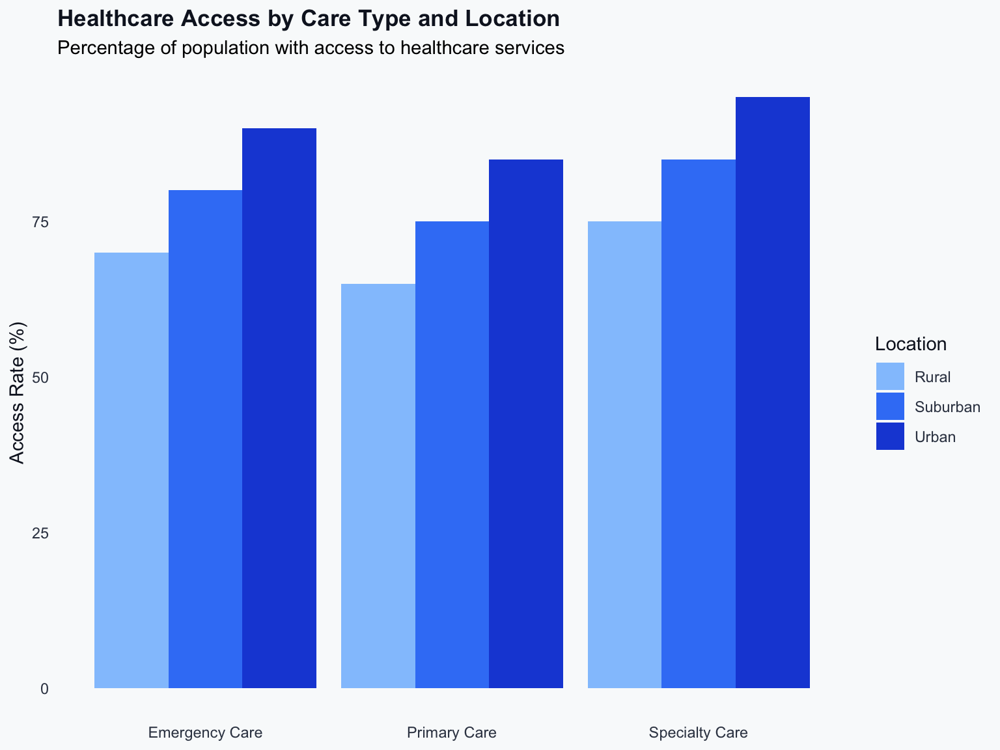

# Install required packages if not already installed
required_packages <- c("dplyr", "ggplot2", "RColorBrewer", "viridis", "kableExtra", "tidyr", "ggridges")
new_packages <- required_packages[!(required_packages %in% installed.packages()[,"Package"])]
if(length(new_packages)) install.packages(new_packages)
# Load required packages
library(dplyr)
library(ggplot2)
library(RColorBrewer)
library(viridis)
library(kableExtra)
library(tidyr)
library(ggridges)Color Systems in R
Color Systems in R
We can take several different approaches to color in data visualization, depending on our audience and our goals.
- Data-focused colors: Designed for accessibility and clear data communication
- Perceptually uniform colors: Colorblind-friendly palettes with perceptual uniformity
- Design system colors: For polished, consistent visual language
RColorBrewer: Accessible Data Visualization
RColorBrewer provides several types of color palettes designed for data visualization:
- Sequential: for ordered data (e.g., “Blues”, “Greens”)
- Diverging: for data that deviates from a middle value (e.g., “RdBu”, “Spectral”)
- Qualitative: for categorical data (e.g., “Set1”, “Set2”)
Here are some examples of RColorBrewer palettes:
# Create a function to display color palettes
display_brewer_pal <- function(name, n) {
colors <- brewer.pal(n, name)
plot(1:n, rep(1, n),
col = colors,
pch = 19,
cex = 5,
xlab = "",
ylab = "",
axes = FALSE)
title(name)
}
# Display some example palettes
par(mfrow = c(2, 2))
display_brewer_pal("Blues", 9) # Sequential
display_brewer_pal("RdBu", 9) # Diverging
display_brewer_pal("Set1", 9) # Qualitative
display_brewer_pal("Spectral", 9) # Diverging
Using RColorBrewer in ggplot2
Here’s how RColorBrewer can be used in different visualization scenarios:
# Create example data
df <- data.frame(
category = letters[1:5],
value = c(10, 20, 15, 25, 30)
)
# Plot with qualitative colors (categorical data)
ggplot(df, aes(x = category, y = value, fill = category)) +
geom_bar(stat = "identity") +
scale_fill_brewer(palette = "Set1") +
labs(title = "Qualitative Colors (Set1)") +
theme_minimal() +
theme(panel.grid = element_blank())
# Create data for a heatmap
set.seed(123)
heatmap_data <- expand.grid(
x = 1:10,
y = 1:10
) |>
mutate(
value = rnorm(100, mean = 50, sd = 15)
)
# Plot with sequential colors (continuous data)
ggplot(heatmap_data, aes(x = x, y = y, fill = value)) +
geom_tile() +
scale_fill_distiller(palette = "Blues") +
labs(
title = "Sequential Colors (Blues)",
subtitle = "Heatmap showing continuous data distribution"
) +
theme_minimal() +
theme(panel.grid = element_blank())
# Create sample data with a moderate relationship and outliers
# Create sample survey response data
set.seed(789)
categories <- c("Vaccination Requirements", "Mask Mandates", "Social Distancing",
"Contact Tracing", "Travel Restrictions", "Quarantine Rules")
data <- data.frame(
category = factor(categories, levels = categories),
support = c(90, 80, 70, 40, 30, 20),
oppose = c(10, 20, 30, 60, 70, 80)
)
# Calculate differences
data$difference <- data$support - data$oppose
# Reshape data for diverging bars
data_long <- data |>
pivot_longer(
cols = c(support, oppose),
names_to = "response",
values_to = "percentage"
) |>
mutate(
percentage = ifelse(response == "oppose", -percentage, percentage)
)
# Create diverging bar chart
ggplot(data_long, aes(x = category, y = percentage, fill = percentage)) +
geom_bar(stat = "identity") +
scale_fill_distiller(
palette = "RdBu",
direction = 1,
limits = c(-100, 100),
breaks = c(-100, -50, 0, 50, 100),
labels = c("100%", "50%", "0%", "50%", "100%")
) +
coord_flip() +
theme_minimal() +
theme(
panel.grid.major.x = element_line(color = "gray90"),
panel.grid.major.y = element_blank(),
panel.grid.minor = element_blank(),
plot.title = element_text(size = 14)
) +
labs(
title = "Public Support for Health Measures",
subtitle = "Percentage support vs. oppose",
x = "",
y = "Percentage",
fill = "Support/Oppose"
)
# Create a lollipop chart version with annotations
ggplot(data_long, aes(x = category, y = percentage, color = percentage)) +
geom_segment(aes(xend = category, yend = 0), linewidth = 1) +
geom_point(size = 4) +
# Add difference annotations
geom_text(
data = data,
aes(x = category, y = 0, label = sprintf("%+d%%", difference)),
hjust = 1.2,
vjust = -1.0,
size = 3.5,
inherit.aes = FALSE # Don't inherit aesthetics from the main plot
) +
scale_color_distiller(
palette = "RdBu",
direction = 1,
limits = c(-100, 100),
breaks = c(-100, -50, 0, 50, 100),
labels = c("100%", "50%", "0%", "50%", "100%")
) +
coord_flip() +
theme_minimal() +
theme(
panel.grid.major.x = element_line(color = "gray90"),
panel.grid.major.y = element_blank(),
panel.grid.minor = element_blank(),
plot.title = element_text(size = 14)
) +
labs(
title = "Public Support for Health Measures",
subtitle = "Percentage support vs. oppose (Lollipop Chart)",
x = "",
y = "Percentage",
color = "Support/Oppose"
)
Viridis: Perceptually Uniform Colors
Perceptually uniform colors are designed to:
- Allow humans to interpret magnitude differences using color (E.g., equal steps in data result in equal perceptual differences in color)
- Ensure that color transitions appear evenly spaced, so a change from 0 to 10 looks as distinct as 10 to 20
- Remain interpretable when converted to grayscale (useful for printing and accessibility)
The viridis package provides colorblind-friendly palettes that are perceptually uniform.
# Create a function to display viridis palettes
display_viridis_pal <- function(option, n) {
colors <- viridis(n, option = option)
plot(1:n, rep(1, n),
col = colors,
pch = 19,
cex = 5,
xlab = "",
ylab = "",
axes = FALSE)
title(option)
}
# Display viridis palettes
par(mfrow = c(2, 2))
display_viridis_pal("viridis", 9) # Default viridis
display_viridis_pal("magma", 9) # Magma
display_viridis_pal("plasma", 9) # Plasma
display_viridis_pal("inferno", 9) # Inferno
Here’s how viridis can be used in ggplot2:
# Create example data with more categories
df <- data.frame(
category = letters[1:8],
value = c(10, 20, 15, 25, 30, 22, 18, 27)
)
# Plot with viridis colors
ggplot(df, aes(x = category, y = value, fill = value)) +
geom_bar(stat = "identity") +
scale_fill_viridis() +
labs(title = "Viridis Colors") +
theme_minimal() +
theme(panel.grid = element_blank())
## Plot with magma colors
# Create simulated temperature data for different cities
set.seed(789)
n_samples <- 1000
cities <- c("Phoenix", "Miami", "Los Angeles", "New York", "Chicago", "Seattle")
ridge_data <- data.frame(
city = rep(cities, each = n_samples),
temperature = c(
rnorm(n_samples, mean = 95, sd = 8), # Phoenix
rnorm(n_samples, mean = 85, sd = 6), # Miami
rnorm(n_samples, mean = 75, sd = 5), # Los Angeles
rnorm(n_samples, mean = 65, sd = 7), # New York
rnorm(n_samples, mean = 55, sd = 8), # Chicago
rnorm(n_samples, mean = 45, sd = 6) # Seattle
)
)
# Calculate mean temperatures and sort cities
city_means <- ridge_data |>
group_by(city) |>
summarize(mean_temp = mean(temperature)) |>
arrange(desc(mean_temp))
# Reorder the factor levels of city based on mean temperature
ridge_data$city <- factor(ridge_data$city, levels = city_means$city)
# Create ridgeline plot of temperature distributions
ggplot(ridge_data, aes(x = temperature, y = city, fill = after_stat(x))) +
geom_density_ridges_gradient(
scale = 3,
rel_min_height = 0.01,
gradient_lwd = 0.5
) +
scale_fill_viridis_c(
option = "plasma",
direction = 1,
limits = c(20, 120),
breaks = seq(20, 120, 20),
labels = paste0(seq(20, 120, 20), "°F")
) +
theme_minimal() +
theme(
panel.grid.major.x = element_line(color = "gray90"),
panel.grid.major.y = element_blank(),
panel.grid.minor = element_blank(),
plot.title = element_text(size = 14)
) +
labs(
title = "Summer Temperature Distributions",
subtitle = "Daily high temperatures by city (sorted by mean temperature)",
x = "Temperature (°F)",
y = "",
fill = "Temperature"
)
Tailwind: One Option for Custom Design
Tailwind’s color palette offers another approach to visualization design. Here’s an example of how you might use it to create visual hierarchy and data representation:
# Source the Tailwind colors
source("colors.R")
# Create example data with categories and subcategories
df <- data.frame(
category = rep(c("Primary Care", "Emergency Care", "Specialty Care"), each = 3),
subcategory = rep(c("Urban", "Suburban", "Rural"), times = 3),
value = c(85, 75, 65, 90, 80, 70, 95, 85, 75) # Healthcare access percentages
)
# One way to create visual hierarchy with grays
custom_theme <- theme_minimal() +
theme(
panel.grid = element_blank(),
plot.background = element_rect(fill = colors[["gray"]][["50"]], color = NA),
panel.background = element_rect(fill = colors[["gray"]][["50"]], color = NA),
axis.text = element_text(color = colors[["gray"]][["700"]]),
axis.title = element_text(color = colors[["gray"]][["900"]]),
plot.title = element_text(color = colors[["gray"]][["900"]], face = "bold"),
legend.text = element_text(color = colors[["gray"]][["700"]]),
legend.title = element_text(color = colors[["gray"]][["900"]])
)
# One approach to using blues for data representation
blue_palette <- c(
colors[["blue"]][["300"]],
colors[["blue"]][["500"]],
colors[["blue"]][["700"]]
)
# The resulting visualization
ggplot(df, aes(x = category, y = value, fill = subcategory)) +
geom_bar(stat = "identity", position = "dodge") +
scale_fill_manual(values = blue_palette) +
labs(
title = "Healthcare Access by Care Type and Location",
subtitle = "Percentage of population with access to healthcare services",
x = NULL,
y = "Access Rate (%)",
fill = "Location"
) +
custom_theme